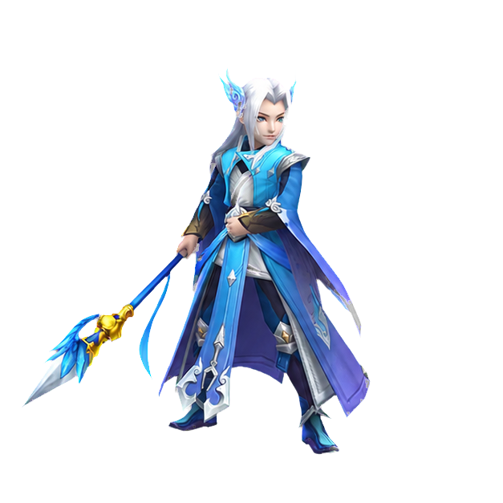

练气初期
挂机倍率 ×1.00
修仙大地图
⛰️
青云山麓
练气初期可进入
测试与存档
主页只保留兑换码和开发者面板；属性、装备、道具、宗门与技能请进入小地图查看。
自动历练地图
当前为手动收益模式：进入地图后，通过小地图战斗、采集、任务和宗门事务获得资源。
主页只保留兑换码和开发者面板；属性、装备、道具、宗门与技能请进入小地图查看。
当前为手动收益模式：进入地图后，通过小地图战斗、采集、任务和宗门事务获得资源。
初入仙途不必慌张，先记住下面几件事：


输入兑换码后确认。兑换码不区分大小写。
修改数值会直接影响当前存档，请确认后再保存。